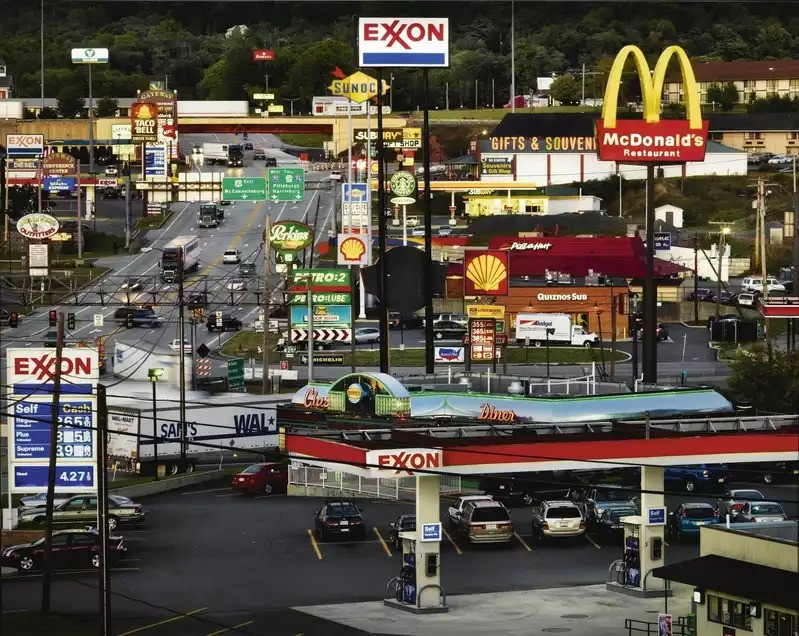

Is America Walkable?
Many places in America are unfortunately heavily reliant on cars. You simply can’t get around in many American cities without a car. There’s a lot of history that goes into this, and I could go into a lengthy diatribe about how car companies sabotaged American cities by buying up and discontinuing tram lines, reframing discussions on pedestrian fatalities to make it your fault if a car hits you, and bulldozing hundreds of city blocks and thousands of bulidings to build financially insolvent highways, but I won’t; I have to finish this wiki at some point. To learn more, check out the second link.

Take a wild guess where this is.